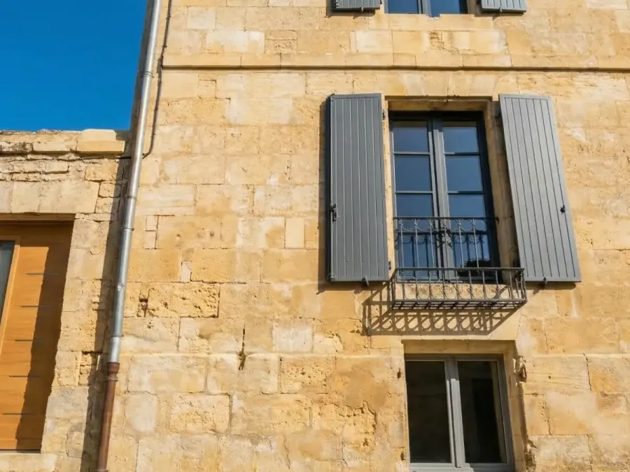

Hydro-gommage doux
Projection d'eau et de poudre minérale à basse pression. Élimine salissures et mousses sans altérer la pierre, la brique ou l'enduit.
Redonnez vie à vos murs avec notre technique d'hydro-gommage douce et efficace. Intervention rapide, devis gratuit en 48h.


Réalisation
Exemple inspiré de nos interventions locales. Nous adaptons la méthode (hydro-gommage, démoussage, traitement) selon le support et l’encrassement.
Après le nettoyage, que faire ?
Si la façade présente des fissures ou un enduit dégradé, voir ravalement de façade. Pour une mise en peinture (protection + esthétique), voir peinture extérieure. Consultez aussi la zone desservie.
Le problème
Les façades non entretenues subissent des dégradations qui peuvent coûter cher à long terme.
Les mousses et lichens retiennent l'humidité, favorisant les fissures et les infiltrations dans vos murs.
Les particules de pollution s'incrustent dans la pierre et l'enduit, créant des traces noires difficiles à enlever.
Une façade en mauvais état fait chuter la valeur de votre bien immobilier et décourage les acheteurs potentiels.
Sans entretien régulier, les matériaux se détériorent et nécessitent des réparations coûteuses.
Notre solution
Nous utilisons l'hydro-gommage, la technique la plus respectueuse pour nettoyer vos façades sans les abîmer.
Projection d'eau et de poudre minérale à basse pression. Élimine salissures et mousses sans altérer la pierre, la brique ou l'enduit.
Nous utilisons des produits respectueux de l'environnement et de la santé, sans danger pour vos plantes et votre famille.
Application d'un traitement hydrofuge pour protéger votre façade contre l'humidité et ralentir la réapparition des mousses.
Devis gratuit sous 48h, planification flexible selon vos disponibilités. Chantier propre et soigné.
Nous analysons l'état de votre façade et identifions les traitements nécessaires.
Vous recevez un devis clair et transparent, sans surprise ni frais cachés.
Nos artisans interviennent avec du matériel professionnel et un savoir-faire éprouvé.
Application d'un traitement protecteur pour garantir la durabilité du résultat.
Pourquoi nous choisir
Plus de 15 ans d'expérience au service de votre patrimoine en Charente.
Basés à L'Isle-d'Espagnac, nous connaissons parfaitement les spécificités des bâtiments charentais.
Nous nous déplaçons pour évaluer l'état réel du support avant de chiffrer : pas de devis à l'aveugle.
De la visite à la fin du chantier, vous échangez avec la même personne, par téléphone ou via le formulaire.
Nous nettoyons et rangeons le chantier chaque soir. Votre confort est notre priorité.
Nous vous aidons dans vos démarches de déclaration préalable de travaux si nécessaire.
Nous choisissons les matériaux selon le support, l'exposition et l'usage : pas de solution standard appliquée partout.
Zone d'intervention
Service de nettoyage de façade disponible sur Angoulême, le Grand Angoulême et de nombreuses communes en Charente (16). Voir toutes les villes desservies.
Votre commune n'est pas listée ? Contactez-nous, nous intervenons également dans les communes voisines.
Découvrez aussi
VPRR vous accompagne dans tous vos projets de rénovation extérieure en Charente.
Démoussage professionnel et traitement hydrofuge pour prolonger la durée de vie de votre toiture.
En savoir plusRénovation complète de vos façades : réparation, enduit, peinture et protection longue durée.
En savoir plusEmbellissez vos façades et boiseries avec nos peintures haute qualité résistantes aux UV.
En savoir plusTarifs & Devis
Le prix d'un nettoyage de façade dépend de plusieurs facteurs. Découvrez comment est calculé votre devis personnalisé.
Le prix varie selon la surface totale à traiter (au m²). Une façade plus grande nécessite plus de matériel et de temps d'intervention.
Façade légèrement sale ou très encrassée ? Niveau de pollution, présence de mousses, lichens ou graffitis influencent le temps de travail nécessaire.
Hydro-gommage simple, démoussage complet, traitement anti-pollution ou protection hydrofuge ? Chaque option a son impact sur le budget.
Étage, nécessité d'échafaudage ou nacelle ? L'accessibilité de votre façade peut influencer les coûts de mise en œuvre.
8-15€/m²
Façade encrassée, mousses et algues
15-30€/m²
Pierre, brique ou enduit : nettoyage en profondeur
+5-8€/m²
En complément, pour retarder le retour des mousses
Prix TTC indicatifs pour un particulier en Charente, hors échafaudage. Chaque projet est unique : demandez votre devis gratuit pour un prix précis.
Chaque projet est unique. Seul un diagnostic visuel permet d'établir un devis précis et juste.
F.A.Q
Trouvez rapidement les réponses à vos questions sur les tarifs et les devis de nettoyage de façade.
Un nettoyage de façade coûte en général entre 8 € et 30 € par m² :
Exemple concret : pour 80 m² de façade en pierre ou enduit à hydro-gommer, comptez environ 1 200 à 2 000 € TTC. Une façade très encrassée ou difficile d'accès (échafaudage) augmente le prix : le devis est gratuit après visite.
La durée dépend de la surface et de l'état de la façade :
Nous planifions selon la météo et nettoyons le chantier chaque soir.
Le nettoyage haute pression projette de l'eau sous forte pression : efficace sur un support solide, mais il peut creuser les joints, écailler l'enduit ou abîmer la pierre tendre. L'hydro-gommage projette un mélange d'eau et de poudre minérale à basse pression : il décape la pollution, les mousses, les graffitis ou une ancienne peinture sans altérer le support. Nous choisissons la méthode lors de la visite, après un essai si besoin.
C'est conseillé : un traitement anti-mousse ou une protection hydrofuge limite le retour des mousses et de l'humidité, et prolonge la propreté de la façade de plusieurs années (en général 5 à 10 ans selon l'exposition). Il est proposé en option et détaillé dans le devis, pour que vous décidiez en connaissance de cause.
Nous intervenons sur la majorité des supports courants : enduit, façade peinte, brique, pierre (dont la pierre calcaire charentaise). Pour les supports fragiles ou anciens, nous validons le réglage lors de la visite pour préserver la matière.
Le devis est détaillé et chiffré poste par poste, sans mauvaise surprise. Il comprend :
Les prix annoncés sont TTC pour un particulier (logement de plus de 2 ans : TVA à 10 %, ou 5,5 % pour certains travaux d'isolation énergétique). Le prix du devis signé est le prix final : si un problème imprévu apparaît en cours de chantier, nous vous prévenons et vous validez avant tout travail supplémentaire.
Nous intervenons avec une assurance Responsabilité Civile Professionnelle, et nous revenons ajuster un point si nécessaire après l'intervention. La tenue dans le temps dépend du support, de l'exposition et du traitement appliqué : nous détaillons les options dans le devis.
Devis gratuit
Décrivez-nous votre projet : réponse personnalisée sous 48 h, sans engagement.